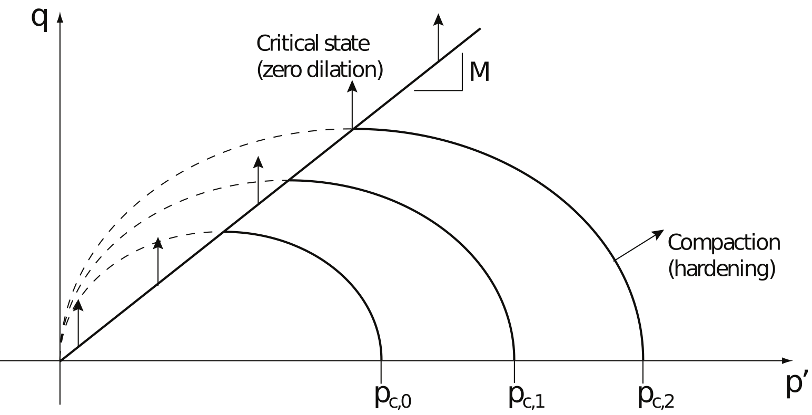
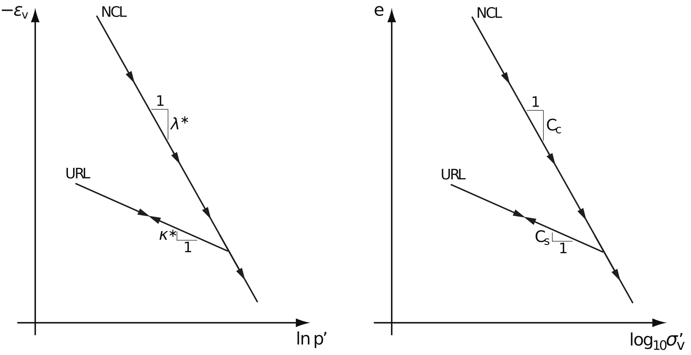

8 Modified Cam Clay
The critical state models developed by Roscoe and his co-workers (Roscoe and Burland 1968; Schofield and Wroth 1968) in the 1960s have been widely applied in geomechanics and form the basis of many subsequent models. The Modified Cam Clay (MCC) model of Roscoe and Burland (1968) has been particularly popular. A slightly modified and extended version of this model (including creep and a finite cohesion, while prohibiting crossing of the critical state line) is implemented in GX.
8.1 Summary of material parameters
Stiffness
- Parameter Set A
- \kappa^*: modified swelling index
- \lambda^*: modified compression index
- Parameter Set B
- C_s: conventional swelling index (approximate, see
Section 8.5 ) - C_c: conventional compression index (approximate, see
Section 8.5 )
- C_s: conventional swelling index (approximate, see
- \nu: Poisson’s ratio
Strength
- c': cohesion
- \phi': friction angle
Initial Conditions
- OCR: overconsolidation ratio (see
Section 8.3 ) - K_0: earth pressure at rest coefficient
- e_0: initial void ratio (only used for Stiffness Parameter Set B)
Creep
- Creep = Yes:
- \mu^*/\lambda^* — relative creep index
8.2 Governing equations
8.2.1 Elasticity
The volumetric and deviatoric stress strain relations are given by
\dot{\varepsilon}_v^e = \frac{1}{K}\dot p', \quad \varepsilon_q = \frac{1}{3G}\dot q \tag{8.1}

Figure 8.1: Modified Cam Clay yield surfaces cut off by failure (critical state) line q = Mp'.
where
K = \frac{p'}{\kappa^*}, \quad G = \frac{3(1-2\nu)}{2(1+\nu)}K \tag{8.2}with \kappa^* being a material parameter (the modified swelling modulus). The general 3D elastic stress–strain relation is:
\dot{\boldsymbol{\varepsilon}} = \mathbb{C}^e \dot{\boldsymbol{\sigma}} \tag{8.3}where \mathbb{C}^e is given in the Elasticity section.
8.2.2 Yield and failure surfaces
The yield function is given by
F = q^2 - M^2 p'(p_c - p') \tag{8.5}where p_c the preconsolidation pressures, functions as a hardening variable and
M = \frac{3\sin\phi'}{\sqrt{3}\cos\theta + \sin\theta\sin\phi'} \tag{8.5}where \phi' is the friction angle and \theta is the Lode angle.
The yield surface (8.5) depicts an ellipse in p'-q whose size is governed by p_c (see Figure 8.1). The ellipse is such that the line q=Mp' passes through its apex. This line is traditionally referred to as the critical state line. The conventional MCC model allows for stress paths that cross the critical state line. However, in the current implementation this is prohibited. That is, the critical state line is a conventional Mohr-Coulomb failure line given by
F_f = |\sigma_1 - \sigma_3| + (\sigma_1 + \sigma_3)\sin\phi \tag{8.6}8.2.3 Flow rules
The flow rule of the yield is the associated flow rule:
\dot{\boldsymbol{\varepsilon}}^p = \dot{\lambda}\frac{\partial F}{\partial \boldsymbol{\sigma}} \tag{8.7}It is noted that this flow rule implies compaction for all stress states on the yield surface, except at the very top of the ellipse wher \dot{\varepsilon}_v^p = 0.
For the failure surface, a nonassociated flow rule is used:
\dot{\boldsymbol{\varepsilon}}^p_f = \dot{\lambda}_f\frac{\partial G_f}{\partial \boldsymbol{\sigma}} \tag{8.8}where
G_f = |\sigma_1 - \sigma_3| \tag{8.9}implying zero dilation.
8.2.4 Hardening law
The hardening law is such that the change in p_c is proportional to the change in \varepsilon_v^p:
\dot p_c = \frac{p_c}{\lambda^* - \kappa^*}\dot{\varepsilon}_v^p \tag{8.10}where \lambda^* is a material parameter, in the following referred to as the modified compression index. This hardening law implies that the yield surface expands \dot p_c>0 up to the critical state line where \dot p_c=0 and the ultimate limit state is reached.
8.2.5 Cohesion
Cohesion is accommodated by replacing the mean effective stress by the following modified mean effective stress throughout:
\tilde{p}' = -\tfrac{1}{3}(\sigma_x' + \sigma_y' + \sigma_z') + \frac{c'}{\tan\phi'} \tag{8.11}8.2.6 Creep
For certain clays, creep (or secondary compression) accounts for a significant part of the total deformation. An often used empirical law states that the volumetric creep strain following full primary consolidation is given by
\varepsilon_v^c = \frac{C_\alpha}{1+e}\log_{10}(t/t_{90}) \tag{8.12}where \Delta \varepsilon_v^c is the volumetric creep strain, C_\alpha is the secondary compression coefficient, e is the void ratio, t_{90} is the time to 90% primary consolidation and t is the time at which the creep strain is evaluated. More generally, the increment in creep stain between two times t_n and t_{n+1} may be calculated as
\Delta\varepsilon_v^c = \frac{C_\alpha}{1+e}\log_{10}(t_{n+1}/t_{n}) \tag{8.13}The creep strain may be integrated to give the total settlement. For a layer of depth H we have:
\Delta u^c = H\frac{C_\alpha}{1+e}\log_{10}(t_{n+1}/t_{n}) \tag{8.14}where \Delta u^c is the increment of vertical settlement due to creep.
In OPTUM GX, creep is included using the approach of Borja and Kavazanjian (1985). The totalstrain is here given by
\boldsymbol{\varepsilon} = \boldsymbol{\varepsilon}^e + \boldsymbol{\varepsilon}^p + \boldsymbol{\varepsilon}^c \tag{8.15}where \boldsymbol\varepsilon^e and \boldsymbol\varepsilon^p are the usual elastic and plastic strains respectively and \boldsymbol\varepsilon^c is the creep strain. To describe the evolution of the creep strain with time, a creep potential, \Phi^c, is introduced by
\frac{d\Phi^c}{dt} = \frac{\mu^*}{\tau_0}\exp\left(-\frac{1}{\mu^*}\Phi^e\right), \quad \Phi(0)=0 \tag{8.16}where \mu^* is a material parameter (equivalent to C_\alpha above) and \tau_0 is a constant which is set internally to 1,day. The evolution of the creep strain is then given by
\frac{d\boldsymbol{\varepsilon}^c}{dt} = \boldsymbol{a}\frac{d\Phi^c}{dt} \tag{8.17}where \boldsymbol a is a vector that gives the direction of the creep strain rate vector. Consistent with Modified Cam Clay, this quantity is taken as
\boldsymbol{a} = \frac{\partial F^c}{\partial \boldsymbol{\sigma}'} \tag{8.18}where
F^c = \tilde{p}+\frac{q^2}{M^2\tilde p} \tag{8.19}In OPTUM GX, creep thus requires the specification of a single additional material parameter, \mu^*. This parameter is specified as a fraction of \lambda^*. The ratio \mu^*/\lambda^* typically falls in the range of 0.02 to 0.1 for a wide variety of natural materials prone to creep (Mesri and Castro 1986).
In the one-dimensional case, the above creep law leads to a volumetric creep strain given by.
\varepsilon_v^c = \mu^*\ln\left(\frac{t + \tau_0}{\tau_0}\right) \tag{8.20}The increment in creep strain over a time increment from t_{90} to t is thus given by
\Delta\varepsilon_v^c = \mu^*\ln\left(\frac{t + \tau_0}{t_{90} + \tau_0}\right) \tag{8.21}which, with {\mu^*}=C_\alpha/[(1+e)\ln 10], approaches the empirical relation (8.13) for times significantly greater than \tau_0=1 day.
8.3 Initial stresses and overconsolidation ratio
Conventionally, the overconsolidation ratio, OCR, is defined as the ratio of the initial vertical stress to the preconsolidation stress:
\text{OCR} = \frac{\sigma_{v,0}'}{\sigma_{c,0}} \tag{8.22}Although this is a rather general definition, \sigma_{c,0} and thereby \mathsf{OCR} are usually inferred from the oedometer test. This is a one-dimensional test in which a vertical stress, in the following denoted \sigma_z is applied while the horizonal strains, \varepsilon_x and \varepsilon_x remain zero. In the general case, some shear stress could also be present although these are almost always assumed to be zero. Assuming elastic behavior, the stresses at yield, following the definition of the OCR (8.22), are:
\begin{array}{l}
\displaystyle\sigma_x'{}^* = \sigma_{x,0}' + (\mathsf{OCR}-1)\frac{\nu}{1-\nu}\sigma_{z,0}'\\
\displaystyle\sigma_y'{}^* = \sigma_{y,0}' + (\mathsf{OCR}-1)\frac{\nu}{1-\nu}\sigma_{z,0}'\\
\displaystyle\sigma_z'{}^* = \mathsf{OCR}\sigma_{z,0}' \\
\displaystyle\tau_{xy}^* = \tau_{xy,0}\\
\displaystyle\tau_{yz}^* = \tau_{yz,0}\\
\displaystyle\tau_{zx}^* = \tau_{zx,0}
\end{array} \tag{8.23}The corresponding value of the initial preconsolidation pressure is:
p_{c,0} = \tilde{p}'{}^* + \frac{q^{*2}}{M^2 \tilde{p}'{}^*} \tag{8.24}8.4 Isotropic compression
In isotropic compression (\sigma_1'=\sigma_2'=\sigma_3'=p') the stress-strain response is as follows. Assume first that the initial stress state is below yield. We then have:
\dot{\varepsilon}_v = \frac{\kappa^*}{p'}\dot{p}' \tag{8.25}At yield, i.e. once {p}'= p_c, we have
\begin{array}{lcl}
\dot{\varepsilon}_v &=& \dot{\varepsilon}_v^e + \dot{\varepsilon}_v^p\\
&=& \displaystyle\frac{\kappa^*}{p'}\dot{p}' + \frac{\lambda^*-\kappa^*}{p_c}\dot{p}_c\\
&=& \displaystyle\frac{\kappa^*}{p'} + \frac{\lambda^*-\kappa^*}{p'}\dot{p}'\\
&=& \displaystyle\frac{\lambda^*}{p'}\dot{p}'
\end{array} \tag{8.26}Summarizing we have
\frac{\textsf{d} \varepsilon_v}{\textsf{d} p'} =\left\{\begin{array}{lcl}
\displaystyle\frac{\kappa^*}{p'}&\textsf{for~~}p'<p_c&\\
\displaystyle\frac{\lambda^*}{p'}&\textsf{for~~}p'=p_c&
\end{array}\right. \tag{8.27}This is the classic bilinear semilog stress-strain relation, though conventionally it is expressed in terms of void ratio versus the base 10 logarithm to the vertical stress. The relation of the above to the more conventional relations is discussed in the following Section.


Figure 8.2: Normal compression line (NCL) and unloading-reloading line (URL) in \ln p'-\varepsilon_v space (left) and idealized response in oedometeter test in terms of \log\sigma_v' vs e.
8.5 Oedometric compression
The oedometer test is rather more common that the isotropic compression test. The test setup is such that all strain except the vertical are zero. The test gauges vertical strain, which is equal to the volumetric strain, as function of applied vertical stress. The result tends to be bilinear relation similar to \eqref, but with the vertical stress, \sigma_v' replacing p' and the vertical preconsolidation stress, \sigma_c, replacing p_c. Moreover, the vertical strain is replaced by the void ratio and \log_{10} is used in place of \ln:
\frac{de}{d\log_{10}\sigma_v'} =
\begin{cases}
C_s, & \sigma_v' < \sigma_c \\
C_c, & \sigma_v' = \sigma_c
\end{cases} \tag{8.28}where the void ratio is
e = (1 + e_0)(1 - \varepsilon_v) - 1 \tag{8.29}with e_0 being the initial void ratio. While is straightforward to convert between \varepsilon_v and e and between \log_{10} and \ln, the conversion between \sigma_v' and p' is cannot be carried out in general. However, there are good arguments to support the following approximations\footnote{In some texts, \kappa^* \approx \frac{2C_s}{2.3(1+e0)} is used while others, e.g. \cite, prefer the present one. Which approximation is better is rather problem dependent. Also, many texts cite the relation between C_c and \lambda^* as being exact although it is, in fact, only approximate.}:
\begin{aligned}
\kappa^* &\approx \frac{C_s}{2.3(1 + e_0)} \\
\lambda^* &\approx \frac{C_c}{2.3(1 + e_0)}
\end{aligned} \tag{8.30}In OPTUM GX, the user has a choice between two parameter sets: A (\kappa^*, \lambda^*) or B (C_s,C_c). In the case of Set B, the above relations are used to calculate equivalent \kappa^* and \lambda^*.